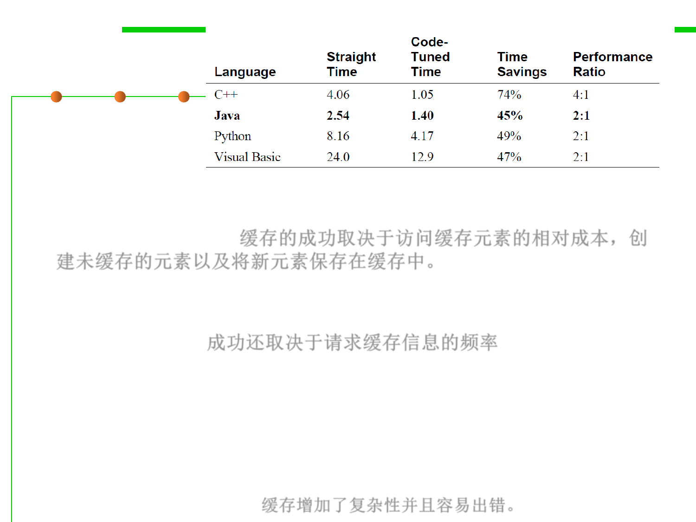

Use Caching
8.3 Code Tuning for Performance Optimization
▪ The success of the cache depends on the relative costs of accessing a
cached element, creating an uncached element, and saving a new
element in the cache. 缓存的成功取决于访问缓存元素的相对成本，创
建未缓存的元素以及将新元素保存在缓存中。
▪ Success also depends on how often the cached information is
requested. In some cases, success might also depend on caching done
by the hardware. 成功还取决于请求缓存信息的频率
▪ Generally, the more it costs to generate a new element and the more
times the same information is requested, the more valuable a cache
is. The cheaper it is to access a cached element and save new
elements in the cache, the more valuable a cache is.
▪ As with other optimization techniques, caching adds complexity and
tends to be error prone. 缓存增加了复杂性并且容易出错。